5 DESeq2 analyisis
First, load DESeq2 library. Beware: DESeq2 dependencies may interfere with dplyr. To avoid interference you may use the library name explicitly, when calling functions, e.g. use DESeq2::plotPCA() instead of just plotPCA() (not used in this tutorial).
#install.packages("BiocManager")
#BiocManager::install("DESeq2")
suppressWarnings(suppressMessages(library(DESeq2)))5.1 DESeqDataSet object
5.1.1 Make DESeqDataSet object
DESeq2 provides several functions for data import from different upstream tools that generate RNA-seq counts. We use the DESeqDataSetFromHTSeqCount function that matches the type of data provided by PCA.
# Set counts folder
counts_folder=file.path(base_folder,"data","HTSeq_counts")
# Make the design variables as factors
# (remember: we customised stringsAsFactors to FALSE in the Start section)
samples.df$oct <- as.factor(samples.df$oct)
samples.df$er <- as.factor(samples.df$er)
# Import sanmples data and counts into DESeqDataSet object
# "dds" stands for Deseq-Data-Set
dds <- DESeqDataSetFromHTSeqCount(sampleTable = samples.df,
directory = counts_folder,
design = ~ oct + er)
# Clean-up
rm(counts_folder)5.1.2 Explore DESeqDataSet object
In short, the DESeqDataSet object generated by DESeqDataSetFromHTSeqCount includes the following slots:
- slot for the matrix with counts (a part of the assays collection, although no other assays is added when reading HTSeq counts)
- slot for the samples information (colData)
- slot for the genes information (rowData). It is empty when reading HTSeq counts. To illustrate the use of rowData we will manually add the gene names (from gencode.22 GTF file)
- slot for some metadata (is virtually empty when reading HTSeq counts)
- slot for design: an important slot that includes a string that defines the analysis, which will be performed by DESeq2 later
# A very short summary
summary(dds)## [1] "DESeqDataSet object of length 60483 with 0 metadata columns"# A bit more expanded summary
dds## class: DESeqDataSet
## dim: 60483 238
## metadata(1): version
## assays(1): counts
## rownames(60483): ENSG00000000003.13 ENSG00000000005.5 ... ENSGR0000280767.1 ENSGR0000281849.1
## rowData names(0):
## colnames(238): TCGA-A7-A0DA TCGA-D8-A1XU ... TCGA-D8-A1XB TCGA-AO-A03M
## colData names(2): oct er# Metadata slot
metadata(dds)## $version
## [1] '1.26.0'# "counts" slot
counts(dds)[1:5,1:5]## TCGA-A7-A0DA TCGA-D8-A1XU TCGA-D8-A143 TCGA-A7-A4SB TCGA-D8-A1XR
## ENSG00000000003.13 2724 5645 6180 2558 3884
## ENSG00000000005.5 7 6 1 32 109
## ENSG00000000419.11 1962 4926 2624 1068 3337
## ENSG00000000457.12 1973 2271 1860 1362 4953
## ENSG00000000460.15 867 675 2359 494 2284# colData slot: samples information
head(as.data.frame(colData(dds)))## oct er
## TCGA-A7-A0DA false Negative
## TCGA-D8-A1XU false Positive
## TCGA-D8-A143 false Negative
## TCGA-A7-A4SB false Positive
## TCGA-D8-A1XR false Positive
## TCGA-BH-A18L true Positive# rowData slot
rowData(dds) # Genes information is empty## DataFrame with 60483 rows and 0 columns# Design slot: a string that follows R conventions for a "formula" in glm models.
design(dds)## ~oct + erIn general, the string in design slot folows the conventions for a formula in R glm analyses. Importantly, by default, the last element in the design formula (“er” in this example) will be used for differential expression analysis. The previous elements (“oct” in this example) will be treated as confounding factors (e.g. for batch effect correction etc).
5.1.3 rowData: adding genes names
If data was imported from Salmon counts by tximeta then the genes names and coordinates would be added in Genomic Ranges format. Unfortunately, HTSeq counts are not supported by tximeta. So, we add the gene names manually: just to illustrate such opportunity (we are not going to use rowData slot later).
# Syncronise genes order in genes.df with genes order in dds
genes.df <- genes.df[rownames(dds),]
# Add gene names to rowData slot of dds
rowData(dds) <- genes.df5.2 Genes filtering
Removing consistently low-expressed genes reduces the number of tests and improves conditions for multiple testing correction later in the analysis. Arbitrarily, in this tutorial we remove any genes with less than 10 cases having counts more than 10.
An alternative/additional approach might be to keep only the most variable genes. However, such approach could be complicated by the fact that variance in RNA-seq counts may depend on the level of expression.
# Check the initial number of genes in DESeqDataSet object
nrow(dds)## [1] 60483# Make index for genes with less than 10 cases having count >= 10
keep <- rowSums(counts(dds) >= 10) >= 10
sum(keep)## [1] 28362# Update the DESeqDataSet object
dds <- dds[keep,]
nrow(dds)## [1] 28362# Clean-up
rm(keep)5.3 Exploring source data
Before looking for the specific genes differentialy expressed between ER-positive and Triple-negative breast cancers, it might be interesting to see if these groups are separated in the space of genes expression. One of the methods that allows such visual check is PCA plot. An alternative widely used method is Hierarchical Clustering (HC).
5.3.1 Normalizing variance
Both, PCA and HC, prioritise the most variable genes when calculating distances between samples. Because the variance in RNA-Seq counts is often higher in highly-expressed genes, PCA and HC may be dominated by the data from the most expressed genes. Normalising variance between low- and highly- expressed genes improves informativeness of PCA and HC.
DESeq2 provides two methods for such variance normalization: VST (Variance Stabilizing Transformation) and Rlog (regularised log-transformation). In essense, both methods are similar to a simple log-transfrormation with some additional correction for the low-expressed genes. Also, DeSeq2 provides a function for generating PCA plot from the transformed data.
Note that the transformed data (vst_dds) is NOT used for the actual differential expression analysis later. The differential analysis will be performed usng the raw counts (dds).
# Make transformed DESeq dataset
vst_dds <- vst(dds)
# Summary information for the transformed DESeq dataset
vst_dds ## class: DESeqTransform
## dim: 28362 238
## metadata(1): version
## assays(1): ''
## rownames(28362): ENSG00000000003.13 ENSG00000000005.5 ... ENSG00000281912.1 ENSG00000281920.1
## rowData names(6): gene_id gene_name ... allZero dispFit
## colnames(238): TCGA-A7-A0DA TCGA-D8-A1XU ... TCGA-D8-A1XB TCGA-AO-A03M
## colData names(3): oct er sizeFactor5.3.2 PCA plot
The PCA plot below shows a clear separation of ER-positive and ER-negative cases in the space of gene expression. At the same time, OCT-imbedding ( true / false ) does not influence position of samples in the PCA plot:
plotPCA(vst_dds, intgroup = c("er", "oct"))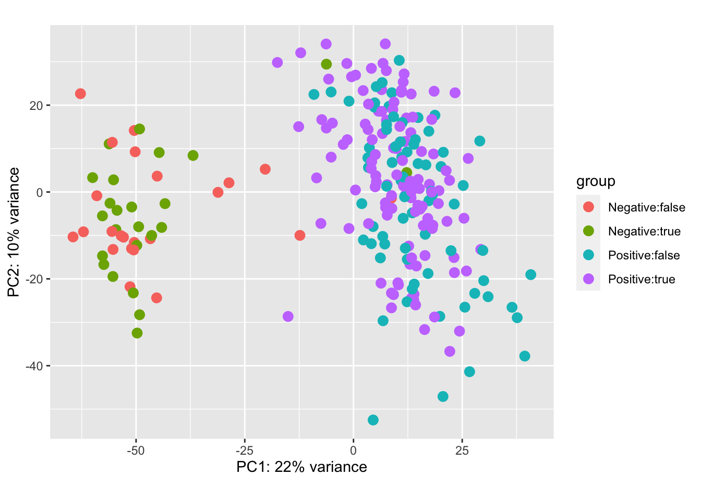
5.3.3 Hierarchical Clustering
The HC plot shows that most of ER-negative cases are aggregated together into a separate cluster. However, the separation is not perfect and the heatmap is not very informative because of the large number of irrelevant genes.
In this example we use pheatmap (pretty heatmap) package to make the heatmap and to perform hierarchical clustering. Other often used packages for plotting heatmaps include heatmap and heatmap.2. heatmap is a reliable base-R tool; however it lacks many convinience features. heatmap.2 (from gplots package) has a bug, which makes it very slow for plotting large matrices (~28k genes x ~230 samples is considered to be a large matrix for this purpose). Also, the heatmap could be plotted with ggplot2, which could provide many advantages (e.g. animation with plotly). I selected pheatmap here because of its simplicity and convinience; and because this tutorial does not need the advasnced ggplot2 features.
Beware: calculating dendrogram for ~28k hgenes may take very long time and require large memory. The code includes cluster_rows = FALSE option in pheatmap to avoid the long calculations.
# Libraries for drawing heatmap
#install.packages("RColorBrewer")
#install.packages("pheatmap")
suppressWarnings(suppressMessages(library(RColorBrewer)))
suppressWarnings(suppressMessages(library(pheatmap)))
# Matrix for clustering and heatmap
vst_counts <- assay(vst_dds)
dim(vst_counts)
# Scale and center by rows.
# Heatmap-making functions often include in-built functions for scaling.
# However, this script does it manually to allow explicit centering, facilitating
# green-black-red palette, when black corresponds to zero (i.e. black = mean gene expression).
vst_counts <- t(scale(t(vst_counts)))
# Make a dataframe with ER- and OCT- status
# (for colour-coded strips along the hea)
cases.df <- as.data.frame(colData(vst_dds))
cases.df <- cases.df %>% select(oct, er)
# Make palette of 21 colours for heatmap drawing.
# The default heatmap palette would be white-yellow-red,
# which is not good for visualizing differences in genes expression.
gbr_21 <- colorRampPalette(c("green", "black", "red"))(n = 21)
# Make breaks between colours
# By default, most hearmap-plotting tools place breaks at equal distance
# Customising breaks by placing them at quantiles makes the hearmap more informative
# (although this is a matter of personal preference :)
# The number of breaksshould be one more than the number of colours in palette
breaks_22 <- quantile(vst_counts, probs=seq(0,1,length.out=22))
# Make heatmap with dendrograms
# Calculating dendrogram for ~28k genes requires large memory and may crash a laptop
# On a laptop with 4 cores and 8GB RAM it may take ~30-40 min
# To suppress genes dendrogram add "cluster_rows = FALSE" option
pheatmap(
mat = vst_counts, # matrix with data
color = gbr_21, # user-defined palette
breaks = breaks_22, # user-defined breaks between colours
scale = "none", # has been scaled manually
annotation_col = cases.df, # data frame with ER- and OCT- status
border_color = NA, # dont draw borders inside the heatmap
cluster_rows = FALSE, # dont cluster genes (to avoid long calculations)
show_colnames = FALSE, # too many samples names to show
show_rownames = FALSE, # too many gene names to show
main = "HC with all genes (~28k)")
# Clean-up
rm(vst_counts, gbr_21, breaks_22, cases.df)Note that the figure shown below was generated without < cluster_rows = FALSE > option, to illustrate the genes clustering.
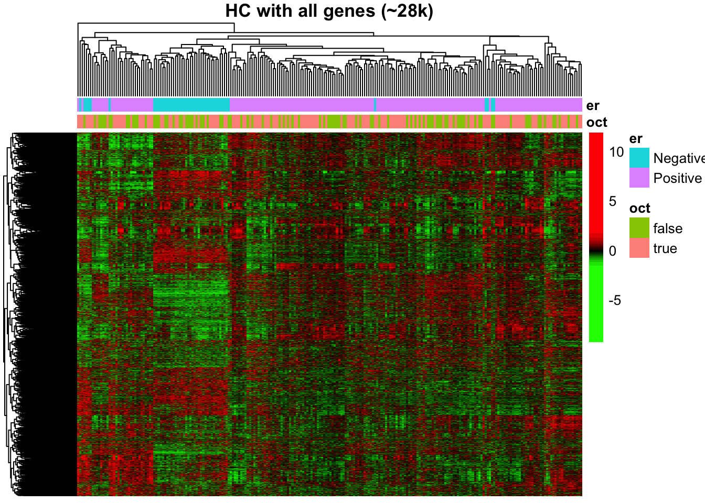
5.4 Calculating DEGs
Overall, the preliminary exploration has suggested that ER-positive and ER-negative tumours have distinctive gene expression profiles. So, what are the specific Differentially Expressed Genes (DEGs)?
In practice, all the complicated DESeq2 statistics (discussed elsewere) is hidden from the user within a single function call, which adds the DEG results to the original DESeq2 dataset object …
# Calculate the differentially expressed genes
ddx <- DESeq(dds) ## estimating size factors## estimating dispersions## gene-wise dispersion estimates## mean-dispersion relationship## final dispersion estimates## fitting model and testing## -- replacing outliers and refitting for 2448 genes
## -- DESeq argument 'minReplicatesForReplace' = 7
## -- original counts are preserved in counts(dds)## estimating dispersions## fitting model and testing# summary of the DESeq Dataset with added results
ddx ## class: DESeqDataSet
## dim: 28362 238
## metadata(1): version
## assays(6): counts mu ... replaceCounts replaceCooks
## rownames(28362): ENSG00000000003.13 ENSG00000000005.5 ... ENSG00000281912.1 ENSG00000281920.1
## rowData names(29): gene_id gene_name ... maxCooks replace
## colnames(238): TCGA-A7-A0DA TCGA-D8-A1XU ... TCGA-D8-A1XB TCGA-AO-A03M
## colData names(4): oct er sizeFactor replaceable# Clean-up
rm(dds)5.5 Extracting results
The results of differential gene expression analysis have been added to DESeq2 Data Set. The next chunk of code shows how to extract these results. This tutorial only considers the key results of DESeq2 analysis. Look for more details in DESeq2 package documentation.
5.5.1 Explore default thresholds
For each gene DESeq2 provides mean expression, fold change and measures of statistical significance (p and “adjusted p”) that allow to conclude whether this gene has been significantly changed.
The default DESeq’s thersholds for labelling genes as “significant” are
- the null hypothesis asuming that there is no difference between the compared groups
- FDR 0.1
These thersholds reflect the practices for RNA-seq experiments with a small number of sampes (the most common case at the early time of RNA-seq development).
In this tutorial, when the data includes more than two hundreed samples, the default DESeq’s thresholds suggest that more than a half of the genes are “significantly” changed between ER-positive and Triple-negative breast cancers (68% = 32 Up-regilated and 36% Down-regulated genes). While it is well known that these cancers have very strong biological differences, such high proportion of changed genes is not realistic. It contradicts to a common assumption, that ony a small proportion of genes should be significantly changed. Also, the distribution of p-values shows noticeable inflation (increased proportion of low p-values) comparatively to the uniform distribution, typically expected under the null.
# Testing against H0 of no difference at FDR 0.1
DESeq2_any_change_fdr_0.1 <- results(ddx)
DESeq2_any_change_fdr_0.1## log2 fold change (MLE): er Positive vs Negative
## Wald test p-value: er Positive vs Negative
## DataFrame with 28362 rows and 6 columns
## baseMean log2FoldChange lfcSE stat pvalue padj
## <numeric> <numeric> <numeric> <numeric> <numeric> <numeric>
## ENSG00000000003.13 3254.88256154068 -0.690175380631575 0.142786200450243 -4.83362802886601 1.34066988573307e-06 4.3852011647055e-06
## ENSG00000000005.5 56.40674633187 1.83304965161698 0.344713183710671 5.31760819787942 1.05140164399798e-07 3.96382472777758e-07
## ENSG00000000419.11 2311.61509753107 -0.373419784953396 0.0828390167004984 -4.50777664712611 6.55104842598776e-06 1.93502223971948e-05
## ENSG00000000457.12 2069.88515433684 0.376458293887623 0.0860125820091379 4.37678168814452 1.20444502953923e-05 3.42632597069124e-05
## ENSG00000000460.15 864.522147486874 -0.812238896522597 0.112023122992459 -7.25063607249438 4.14818894531819e-13 2.94864498413821e-12
## ... ... ... ... ... ... ...
## ENSG00000281883.1 3.63933518666046 0.0230481676343476 0.217488426209903 0.105974226012851 0.915602801673173 0.934448602412902
## ENSG00000281896.1 53.2908748093281 0.268939774867321 0.152935139447986 1.75852178798182 0.0786587676712237 0.114055213123274
## ENSG00000281903.1 24.7506455382964 0.770290213483771 0.175801373989849 4.38159381807931 1.17814293010927e-05 3.35722794973969e-05
## ENSG00000281912.1 98.450301361596 -0.423446403741261 0.139085533004298 -3.04450358419502 0.00233064653179811 0.00461636964416915
## ENSG00000281920.1 5.641455151427 1.29108849263691 0.253834348705963 5.08634272398054 3.65034159677914e-07 1.29058823694652e-06# Explaing the columns in result table
mcols(DESeq2_any_change_fdr_0.1, use.names = TRUE)## DataFrame with 6 rows and 2 columns
## type description
## <character> <character>
## baseMean intermediate mean of normalized counts for all samples
## log2FoldChange results log2 fold change (MLE): er Positive vs Negative
## lfcSE results standard error: er Positive vs Negative
## stat results Wald statistic: er Positive vs Negative
## pvalue results Wald test p-value: er Positive vs Negative
## padj results BH adjusted p-values# A very high proportion of suggested DEGs
summary(DESeq2_any_change_fdr_0.1)##
## out of 28362 with nonzero total read count
## adjusted p-value < 0.1
## LFC > 0 (up) : 9053, 32%
## LFC < 0 (down) : 10212, 36%
## outliers [1] : 0, 0%
## low counts [2] : 0, 0%
## (mean count < 0)
## [1] see 'cooksCutoff' argument of ?results
## [2] see 'independentFiltering' argument of ?results# Inflated p-values comparatively to the expected uniform distribution
hist(DESeq2_any_change_fdr_0.1$pvalue) 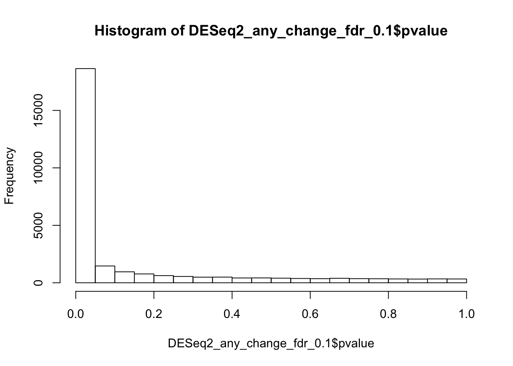
5.5.2 User-defined thresholds
DESeq2 allows customised thresholds to select significant genes. The following chunk of code shows how to select genes that are significant for
- null hypothests that differences are less than 2-fold (log2 FC 1)
- FDR 0.001
The adjusted thresholds suggest less than 10% are diferentially expressed genes: 3.9% up-regulated and 4.8% Down-regulated. This looks much more realistic estimate, than the one suggested using the default settings.
# Testing for at least 2-fold difference at FDR 0.001
DESeq2_fc_2_fdr_0.01 <- results(ddx, lfcThreshold=1, alpha=0.01)
DESeq2_fc_2_fdr_0.01## log2 fold change (MLE): er Positive vs Negative
## Wald test p-value: er Positive vs Negative
## DataFrame with 28362 rows and 6 columns
## baseMean log2FoldChange lfcSE stat pvalue padj
## <numeric> <numeric> <numeric> <numeric> <numeric> <numeric>
## ENSG00000000003.13 3254.88256154068 -0.690175380631575 0.142786200450243 0 1 1
## ENSG00000000005.5 56.40674633187 1.83304965161698 0.344713183710671 2.41664575357868 0.0156642534905646 0.135779204614729
## ENSG00000000419.11 2311.61509753107 -0.373419784953396 0.0828390167004984 0 1 1
## ENSG00000000457.12 2069.88515433684 0.376458293887623 0.0860125820091379 0 1 1
## ENSG00000000460.15 864.522147486874 -0.812238896522597 0.112023122992459 0 1 1
## ... ... ... ... ... ... ...
## ENSG00000281883.1 3.63933518666046 0.0230481676343476 0.217488426209903 0 1 1
## ENSG00000281896.1 53.2908748093281 0.268939774867321 0.152935139447986 0 1 1
## ENSG00000281903.1 24.7506455382964 0.770290213483771 0.175801373989849 0 1 1
## ENSG00000281912.1 98.450301361596 -0.423446403741261 0.139085533004298 0 1 1
## ENSG00000281920.1 5.641455151427 1.29108849263691 0.253834348705963 1.14676557416627 0.251478520760158 1# Check proportion of differentially expressed genes
summary(DESeq2_fc_2_fdr_0.01)##
## out of 28362 with nonzero total read count
## adjusted p-value < 0.01
## LFC > 1.00 (up) : 1118, 3.9%
## LFC < -1.00 (down) : 1358, 4.8%
## outliers [1] : 0, 0%
## low counts [2] : 0, 0%
## (mean count < 0)
## [1] see 'cooksCutoff' argument of ?results
## [2] see 'independentFiltering' argument of ?results# Distribution of p-values:
# not uniform, but without the huge inflation either
hist(DESeq2_fc_2_fdr_0.01$pvalue)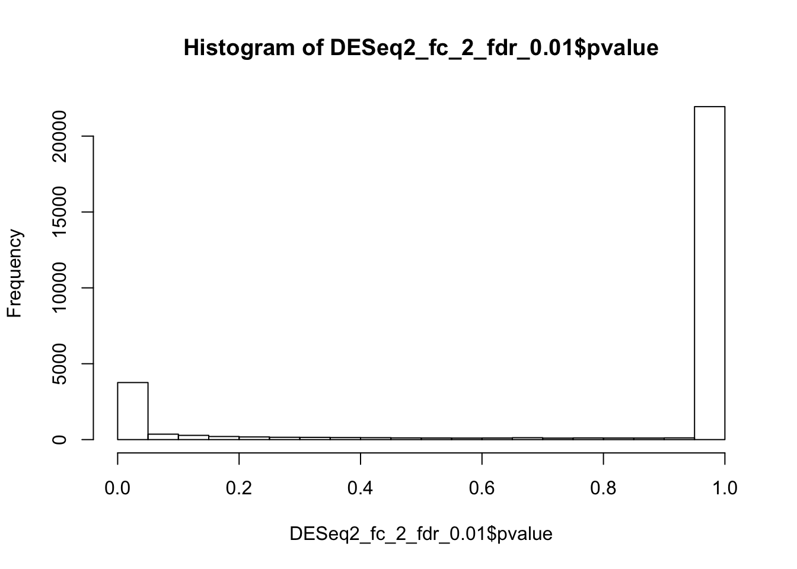
5.5.3 Compare results with different thresholds
Importantly, the above result with adjusted thresholds is NOT equivalent to mere selecting of genes with fold change >2 from the result obtained earlier using the default thersholds. While the fold-change and mean expression, of course, remain the same, the p-values and FDR have been changed, because they are calculated against a different null hypothesis. See help for DESEq2::results function for more details.
plot(DESeq2_fc_2_fdr_0.01$baseMean, DESeq2_any_change_fdr_0.1$baseMean,
main="Compare mean expressions")
abline(0,1, col="red", lty=2)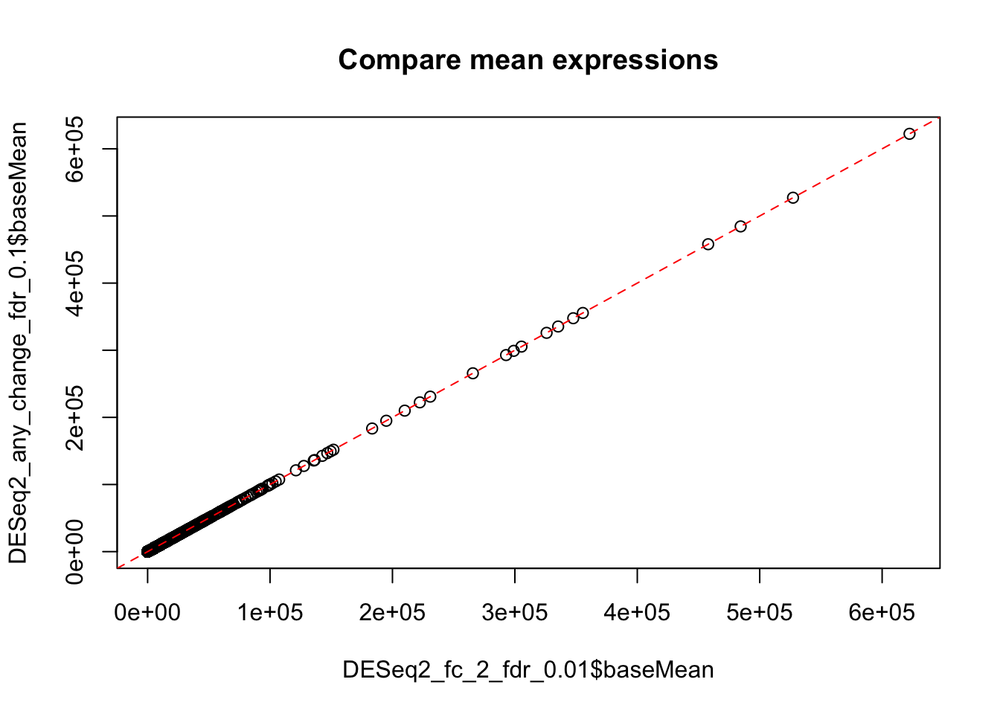
plot(DESeq2_fc_2_fdr_0.01$log2FoldChange, DESeq2_any_change_fdr_0.1$log2FoldChange,
main="Compare fold changes")
abline(0,1, col="red", lty=2)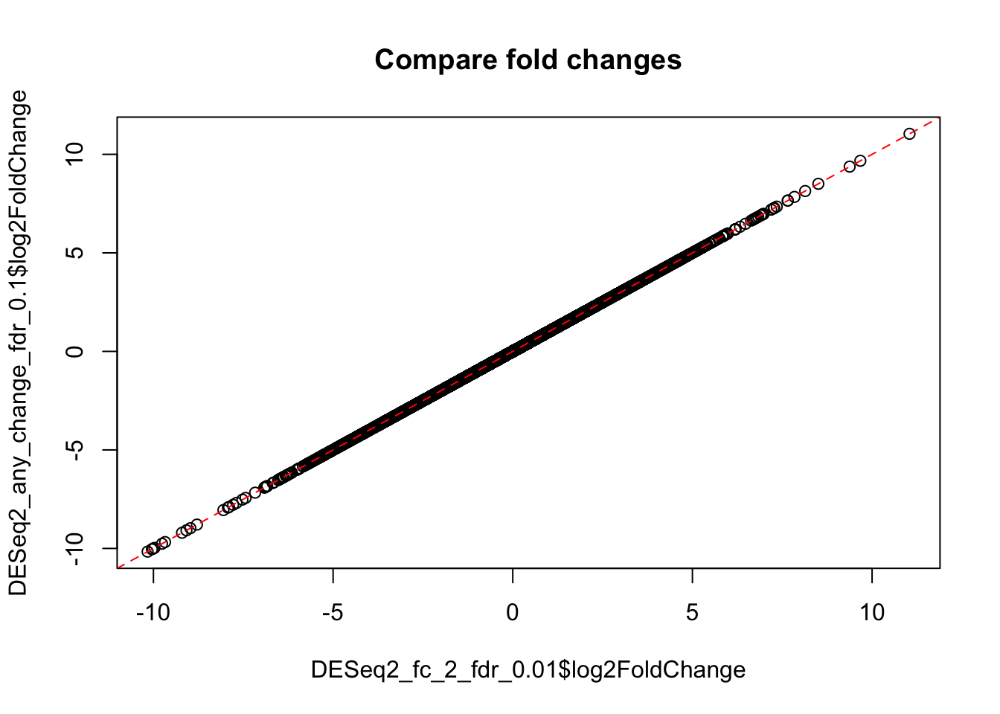
plot(DESeq2_fc_2_fdr_0.01$pvalue, DESeq2_any_change_fdr_0.1$pvalue,
main="Compare p-values")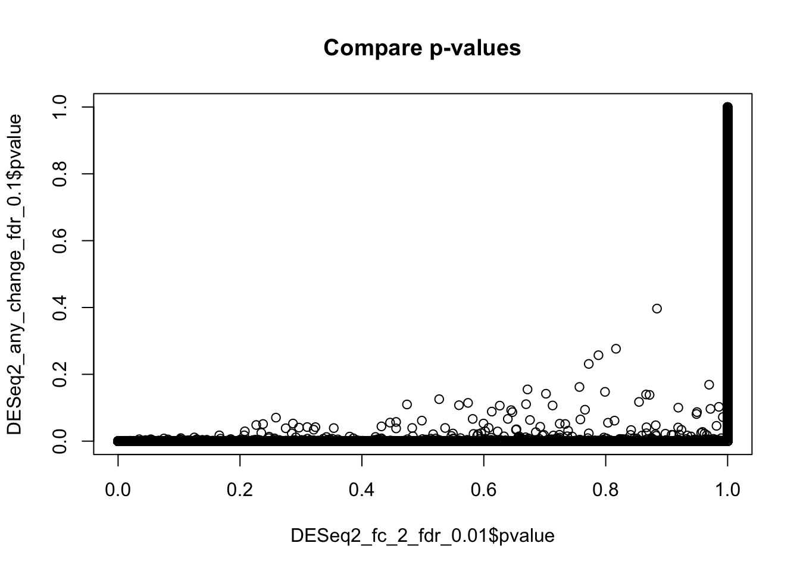
5.6 Exploring results
In this tutorial, we will explore the results with the modifyed thresholds: at least 2 fold change with FDR 0.01.
These thresholds where selected iteratively, checking the result against a list of selcted known genes, which were reported previously by others for ER-positive breast cancers.
rm(DESeq2_any_change_fdr_0.1)5.6.1 Check genes with no p-value
Because of the large number of samples, no genes have been excluded from analysis by DESeq in this example. However, for a smaller number of samples, DESeq2 may exclude some genes, which are very unlikely to be differentially expressed, to improve conditions for multiple testing correction. For such genes the padj (FDR) value would be set to NA.
sum(is.na(DESeq2_fc_2_fdr_0.01$padj))## [1] 05.6.2 Plot dispersions
Adjustment of dispersions is one of the key statistical tasks in DSEq2. However, in this analysis, because of the large number of samples, the dispersion adjustments were very modest (blue dots overlay the black ones).
plotDispEsts(ddx, main="Dispersion estimates and adjustments")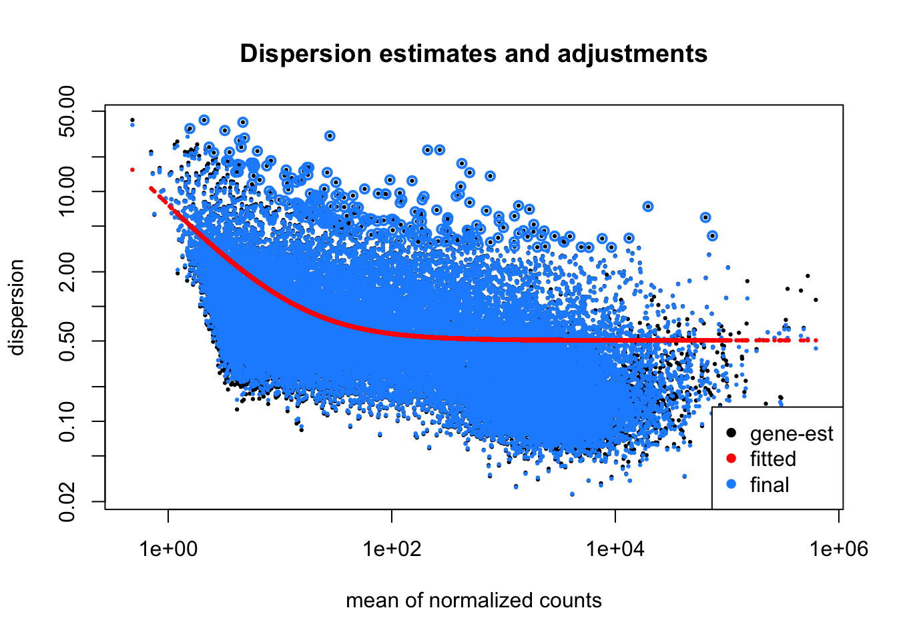
5.6.3 MA plots
MA plot shows fold change along the y-axis, mean expression along the x-axis and significance by colour coding (in red). Each dot represents a gene. The genes equally expressed in both groups (ER-positive and Triple-negative tumours) are located along the middle zero-line. The differentially expressed genes will be located above- or below- the zero-line.
Because of the large number of available samples, a large number of genes have reached statistical “significance” at the default FDR < 0.1 threshold (red dots). This is consistent with the strong biological difference between ER-positive and ER-negative breast cancers. A smaller, but still very large number of genes have reached “significance” at FDR < 10-6 level.
plotMA(ddx, lfcThreshold=1, alpha=0.01, main="ER-pos vs Triple-neg\nred: FC>2, FDR<0.01")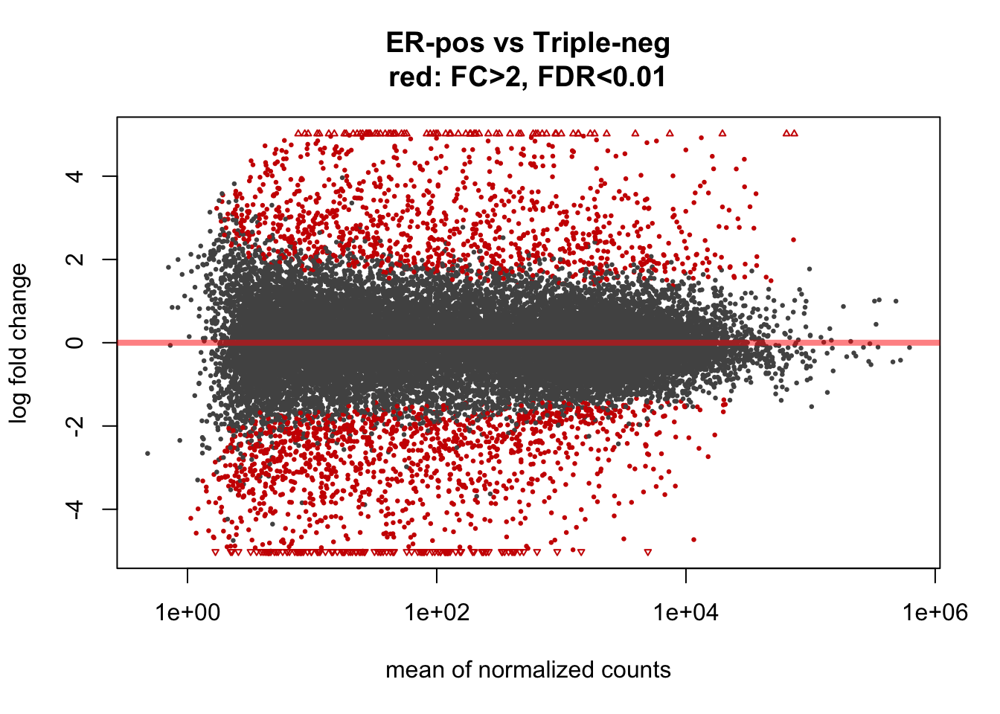
This would be the MA-plot for the default DESeq2 settings:
plotMA(ddx, main="ER-pos vs Triple-neg\nred: Any Change, FDR>0.1 (default settings)")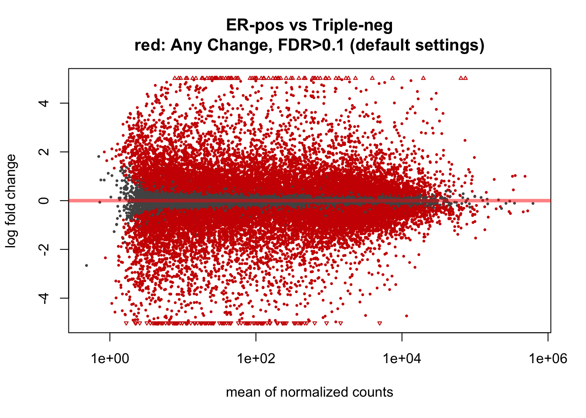
By default, of course, the null hypothesis is either of no difference, or that the difference is below the specified logFC threshold. That means the alternative hypothesis is that the changes are above the threshold.
A very interesting and unusual feature of DESeq2 is that it allows to test for alternative hypothesis that the change is LESS than a specified threshold. In other words, DESeq2 provides a statistical framework to look for unchanged genes:
plotMA(ddx, lfcThreshold=1, altHypothesis="lessAbs", alpha=0.01,
main="ER-pos vs Triple-neg\nred: FC<2, FDR<0.01")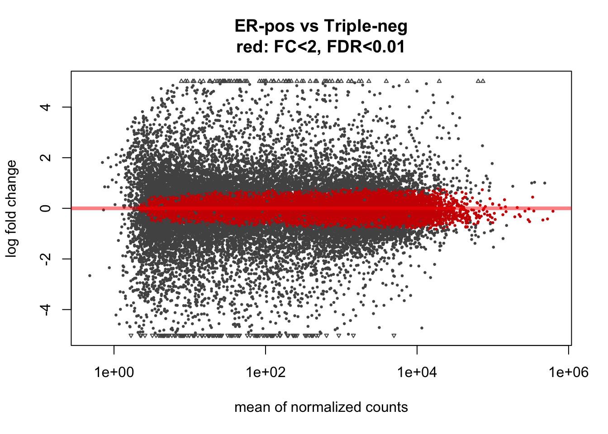
5.6.4 Plot counts for an individual gene
In this tutorial we will plot counts for Estrogen Receptor Alpha (ESR1) comparing ER-positive and Triple-negative groups.
# Get gene ID for ESR1
ESR1_gene_id <- genes.df %>%
filter(gene_name == "ESR1") %>%
select(gene_id)
# Make the plot
plotCounts(ddx, gene=as.character(ESR1_gene_id), intgroup = "er")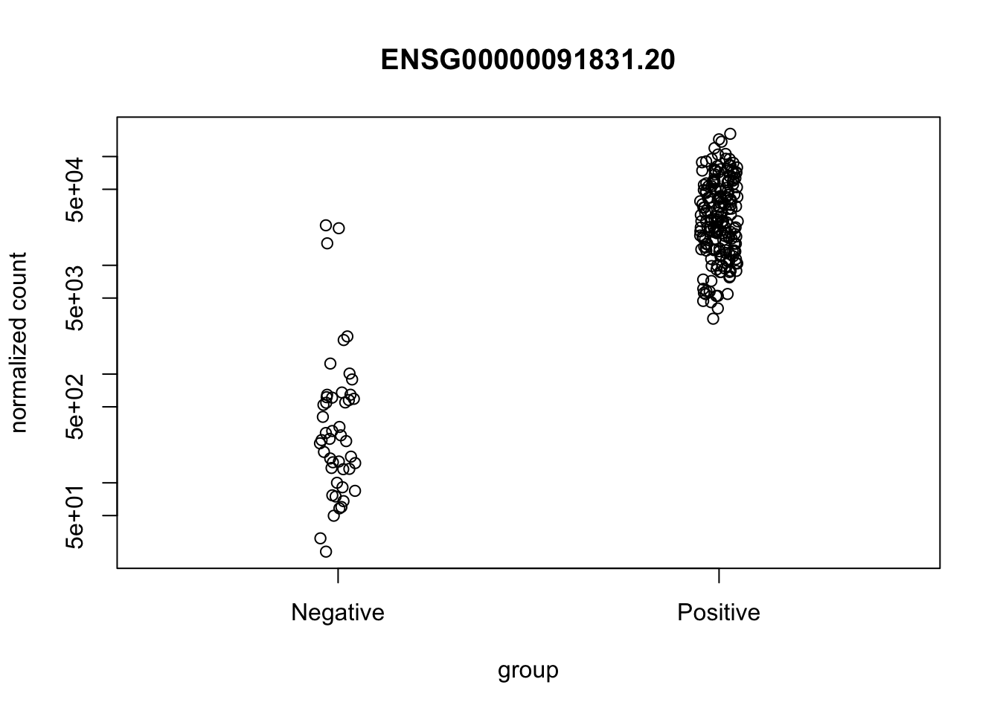
# Clean-up
rm(ESR1_gene_id)5.6.5 Convert results to data-frame
# The results can be converted to data.frame
DESeq2_fc_2_fdr_0.01_all_genes.df <- as.data.frame(DESeq2_fc_2_fdr_0.01)
head(DESeq2_fc_2_fdr_0.01_all_genes.df)## baseMean log2FoldChange lfcSE stat pvalue padj
## ENSG00000000003.13 3254.88256 -0.6901754 0.14278620 0.000000 1.00000000 1.0000000
## ENSG00000000005.5 56.40675 1.8330497 0.34471318 2.416646 0.01566425 0.1357792
## ENSG00000000419.11 2311.61510 -0.3734198 0.08283902 0.000000 1.00000000 1.0000000
## ENSG00000000457.12 2069.88515 0.3764583 0.08601258 0.000000 1.00000000 1.0000000
## ENSG00000000460.15 864.52215 -0.8122389 0.11202312 0.000000 1.00000000 1.0000000
## ENSG00000000938.11 621.25238 -0.1733090 0.14869825 0.000000 1.00000000 1.0000000# Copy gene ID-s from the rownames to a column
DESeq2_fc_2_fdr_0.01_all_genes.df$gene_id=rownames(DESeq2_fc_2_fdr_0.01_all_genes.df)
head(DESeq2_fc_2_fdr_0.01_all_genes.df)## baseMean log2FoldChange lfcSE stat pvalue padj gene_id
## ENSG00000000003.13 3254.88256 -0.6901754 0.14278620 0.000000 1.00000000 1.0000000 ENSG00000000003.13
## ENSG00000000005.5 56.40675 1.8330497 0.34471318 2.416646 0.01566425 0.1357792 ENSG00000000005.5
## ENSG00000000419.11 2311.61510 -0.3734198 0.08283902 0.000000 1.00000000 1.0000000 ENSG00000000419.11
## ENSG00000000457.12 2069.88515 0.3764583 0.08601258 0.000000 1.00000000 1.0000000 ENSG00000000457.12
## ENSG00000000460.15 864.52215 -0.8122389 0.11202312 0.000000 1.00000000 1.0000000 ENSG00000000460.15
## ENSG00000000938.11 621.25238 -0.1733090 0.14869825 0.000000 1.00000000 1.0000000 ENSG00000000938.11# Add gene names (using information obtained from the GTF file earlier)
DESeq2_fc_2_fdr_0.01_all_genes.df <-left_join(DESeq2_fc_2_fdr_0.01_all_genes.df, genes.df, by="gene_id")
head(DESeq2_fc_2_fdr_0.01_all_genes.df)## baseMean log2FoldChange lfcSE stat pvalue padj gene_id gene_name
## 1 3254.88256 -0.6901754 0.14278620 0.000000 1.00000000 1.0000000 ENSG00000000003.13 TSPAN6
## 2 56.40675 1.8330497 0.34471318 2.416646 0.01566425 0.1357792 ENSG00000000005.5 TNMD
## 3 2311.61510 -0.3734198 0.08283902 0.000000 1.00000000 1.0000000 ENSG00000000419.11 DPM1
## 4 2069.88515 0.3764583 0.08601258 0.000000 1.00000000 1.0000000 ENSG00000000457.12 SCYL3
## 5 864.52215 -0.8122389 0.11202312 0.000000 1.00000000 1.0000000 ENSG00000000460.15 C1orf112
## 6 621.25238 -0.1733090 0.14869825 0.000000 1.00000000 1.0000000 ENSG00000000938.11 FGRdim(DESeq2_fc_2_fdr_0.01_all_genes.df)## [1] 28362 8Make a separate dataframe with the differentially expressed genes only: expression change at least 2-fold with FDR 0.01
# Select Differentially Expressed Genes only
DESeq2_fc_2_fdr_0.01_DEGs.df <- DESeq2_fc_2_fdr_0.01_all_genes.df %>%
filter(-log10(padj) > 2, abs(log2FoldChange) > 1) %>%
select(gene_name, gene_id, baseMean, log2FoldChange, padj) %>%
arrange(desc(log2FoldChange))
# Check results
dim(DESeq2_fc_2_fdr_0.01_DEGs.df)## [1] 2476 5head(DESeq2_fc_2_fdr_0.01_DEGs.df)## gene_name gene_id baseMean log2FoldChange padj
## 1 CARTPT ENSG00000164326.4 760.7236 11.041924 5.602005e-26
## 2 CPB1 ENSG00000153002.10 64177.1952 9.673386 3.075352e-48
## 3 RP11-53O19.2 ENSG00000248779.1 301.5455 9.376603 3.960013e-46
## 4 RP11-473L15.3 ENSG00000249203.1 171.1401 8.504287 3.198874e-43
## 5 RP11-680B3.2 ENSG00000240521.1 118.1529 8.138256 6.406333e-18
## 6 CLEC3A ENSG00000166509.9 19635.8020 7.839747 2.696858e-24# Clean-up
rm(DESeq2_fc_2_fdr_0.01)5.6.6 Check known genes
The list of genes up-regulated in ER-positive breast cancers is not yet definitevely established. Numerous papers report different lists of genes in cell lines or clinical biopsies, using different study designs, experimental methods etc. ESR1, PGR, TFF1, TFF3, FOXA1, GATA3 are amongst the most consistently mentioned genes up-regulated in ER-positive cancers. Reports about the genes down-regulated in ER-positive breast cancers are even less consistent, although FOXC1, MIA had been mentioned earlier in this context.
The changes in expression of selected known ER-associated genes confirm that our findings are considtent with previous reports. In additon, our analysis suggests many other genes, not yet reported in context of ER signalling in breast cancer. The newly reported genes need to be validated in an independent dataset before making definitive conclusions.
# Make a list of selected previously known genes of interest
selected_known_genes=c("ESR1", "PGR", "TFF1", "TFF3", "GATA3", "FOXA1", "FOXC1", "MIA")
# Look at the genes of interest in the top DEGs in our dataset
DESeq2_fc_2_fdr_0.01_DEGs.df %>%
filter(gene_name %in% selected_known_genes)## gene_name gene_id baseMean log2FoldChange padj
## 1 TFF1 ENSG00000160182.2 16259.9568 4.476394 9.765610e-15
## 2 ESR1 ENSG00000091831.20 29402.2500 4.406085 3.070201e-44
## 3 TFF3 ENSG00000160180.15 16669.3405 4.175744 1.344767e-18
## 4 PGR ENSG00000082175.13 11860.4295 3.597820 2.272716e-14
## 5 FOXA1 ENSG00000129514.5 18425.8831 2.792643 8.023961e-16
## 6 GATA3 ENSG00000107485.14 35098.3567 2.750493 1.204231e-22
## 7 FOXC1 ENSG00000054598.6 1822.2110 -3.702730 2.674219e-47
## 8 MIA ENSG00000261857.5 296.8554 -3.865913 3.768407e-17# Clean-up
rm(selected_known_genes)5.6.7 Volcano plot
A volcano plot allows simultaneous visualisation of significance (y axis) and fold change (x axis).
# Prepare colour-coding for genes: highlit the DEGs in red
genes_color <- rep("blue",nrow(DESeq2_fc_2_fdr_0.01_all_genes.df))
"red" -> genes_color[DESeq2_fc_2_fdr_0.01_all_genes.df$gene_id %in% DESeq2_fc_2_fdr_0.01_DEGs.df$gene_id]
# Make plot
plot(x=DESeq2_fc_2_fdr_0.01_all_genes.df$log2FoldChange,
y=-log10(DESeq2_fc_2_fdr_0.01_all_genes.df$padj),
col=genes_color,
main="TCGA BTCA: ER-pos vs Triple-neg\nFC 2, FDR 0.01")
# Add lines to show thresholds for the top genes
abline(h=2, lty=2) # FDR 0.01
abline(v=-1, lty=2) # FC < -2
abline(v=1, lty=2) # FC > 2
# Label Estrogen Receptor Alpha gene
esr1.df <- DESeq2_fc_2_fdr_0.01_all_genes.df %>% filter(gene_name == "ESR1")
text(esr1.df$log2FoldChange, -log10(esr1.df$padj), "ESR1", font=2, col="darkgreen", pos=3)
# Label most down-regulated genes
down_regulated_genes.df <- DESeq2_fc_2_fdr_0.01_all_genes.df %>%
filter(-log10(padj)>60) %>%
select(gene_name, log2FoldChange,padj)
text(down_regulated_genes.df$log2FoldChange,
-log10(down_regulated_genes.df$padj),
down_regulated_genes.df$gene_name,
col="darkgreen", pos=c(4,4,2,4,4,4), cex=0.75)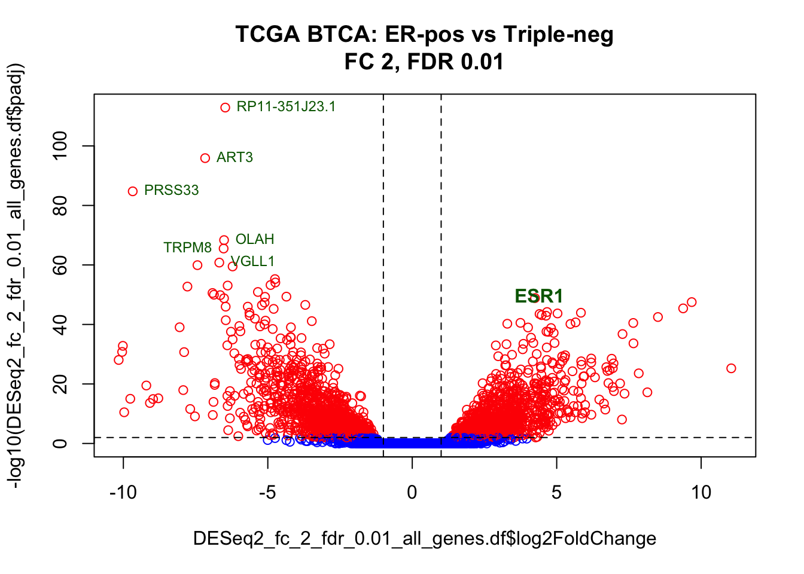
# Clean-up
rm(genes_color, esr1.df, down_regulated_genes.df)5.6.8 Hierarchical clustering using DEGs
Hierarchical clustering is also informative to show relations between samples and top differentially expressed genes
# Libraries for drawing heatmap
#install.packages("RColorBrewer")
#install.packages("pheatmap")
#library(RColorBrewer)
#library(pheatmap)
# Matrix for clustering and heatmap
vst_counts <- assay(vst_dds)
DEGs <- rownames(vst_counts) %in% DESeq2_fc_2_fdr_0.01_DEGs.df$gene_id
vst_counts <- vst_counts[DEGs,]
# Scale and center by rows
vst_counts <- t(scale(t(vst_counts)))
# Change genes IDs to genes Names
rownames(DESeq2_fc_2_fdr_0.01_DEGs.df) <- DESeq2_fc_2_fdr_0.01_DEGs.df$gene_id
rownames(vst_counts) <- DESeq2_fc_2_fdr_0.01_DEGs.df[rownames(vst_counts),"gene_name"]
# Data frame with ER- and OCT- status
cases.df <- as.data.frame(colData(vst_dds))
cases.df <- cases.df %>% select(oct, er)
# Make palette of 99 colours for heatmap
gbr_99 <- colorRampPalette(c("green", "black", "red"))(n = 99)
# Make breaks between colours by 100 quantiles
breaks_100 <- quantile(vst_counts, probs=seq(0,1,length.out=100))
# Plot the heatmap and dendrograms
# Row and column names couls be shown if there was a smaller number of genes and samples
# Options "fontsize_row" and "fontsize_col" could be used for row/column labels adjustment
pheatmap(
mat = vst_counts, # matrix with data
color = gbr_99, # user-defined palette
breaks = breaks_100, # user-defined breaks between colours
annotation_col = cases.df, # ER- and OCT- status
scale = "none", # has been scaled manually
border_color = NA, # dont draw borders in heatmap
show_rownames = FALSE, # too many genes to show names
show_colnames = FALSE, # too many samples to show names
main = "HC with top DEGs")
# Clean-up
rm(vst_counts, gbr_99, breaks_100, cases.df, DEGs)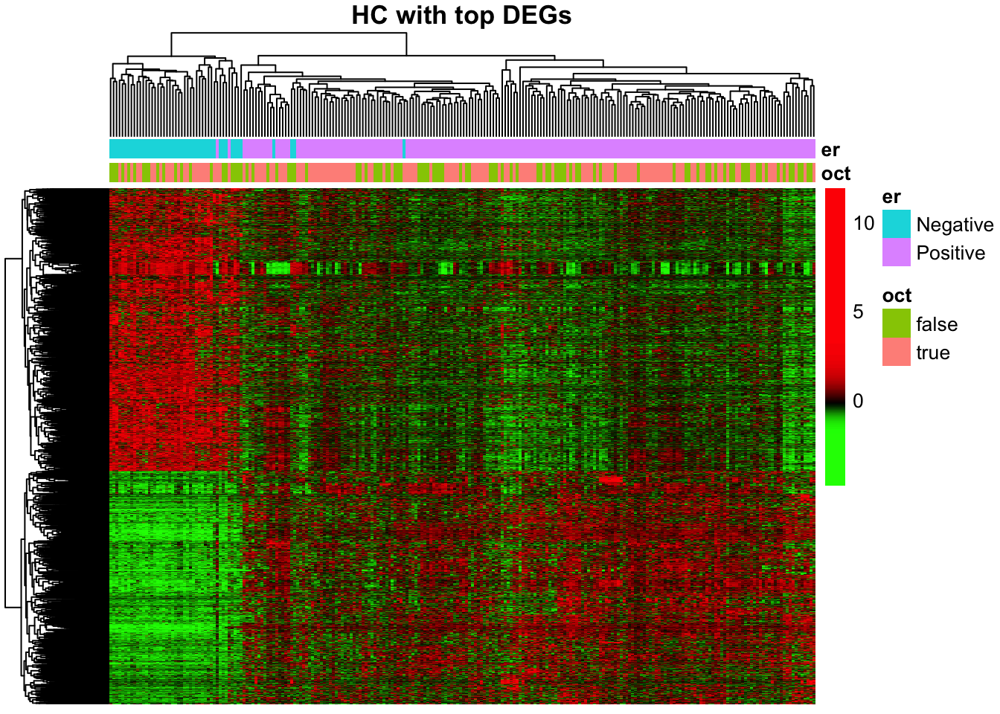
5.7 Save results
You can use write.table function to save DEGs (and results for all genes) to a text file:
# Save DEGs
write.table(DESeq2_fc_2_fdr_0.01_DEGs.df,
file=file.path(base_folder,"analysis","results","DESeq2_fc_2_fdr_0_01_DEGs.txt"),
quote=F, sep="\t", row.names = F)
# Save all genes
write.table(DESeq2_fc_2_fdr_0.01_all_genes.df,
file=file.path(base_folder,"analysis","results","DESeq2_fc_2_fdr_0_01_all_genes.txt"),
quote=F, sep="\t", row.names = F)